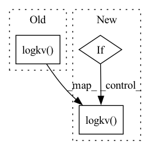

Pattern ID :7438
Before Change
logger.logkv("clip_range", clip_range)
if self.clip_range_vf is not None:
clip_range_vf = self.clip_range_vf(self._current_progress)
logger.logkv( "clip_range_vf", clip_range_vf)
for gradient_step in range(gradient_steps):
approx_kl_divs = []
// Sample replay bufferAfter Change
self.rollout_buffer.values.flatten())
logger.logkv("clip_range", clip_range)
if self.clip_range_vf is not None:
logger.logkv( "clip_range_vf", clip_range_vf)
logger.logkv("explained_variance", explained_var)
// TODO: gather stats for the entropy and other losses?In pattern: SUPERPATTERN
Frequency: 3
Non-data size: 3
Instances Fragment ID: 24634229
Project Name: dlr-rm/stable-baselines3
Commit Name: 2ce31c1e210156fc4a671ea86a7ba199bdab5ec3
Time: 2020-02-11
Author: antonin.raffin@dlr.de
File Name: torchy_baselines/ppo/ppo.py
M Class Name: PPO
N Class Name: PPO
M Method Name: train(3)
N Method Name: train(3)
M Parent Class: BaseRLModel
N Parent Class: BaseRLModel
M File Name: torchy_baselines/ppo/ppo.py
N File Name: torchy_baselines/ppo/ppo.py
M Start Line: 211
M End Line: 283
N Start Line: 209
N End Line: 289
Before Change
logger.logkv("entropy", entropy.mean().item())
logger.logkv("policy_loss", policy_loss.item())
logger.logkv("value_loss", value_loss.item())
logger.logkv( "std", th.exp(self.policy.log_std).mean().item())
def learn(self, total_timesteps, callback=None, log_interval=1,
eval_env=None, eval_freq=-1, n_eval_episodes=5, tb_log_name="PPO", reset_num_timesteps=True):
After Change
logger.logkv("entropy", entropy.mean().item())
logger.logkv("policy_loss", policy_loss.item())
logger.logkv("value_loss", value_loss.item())
if hasattr(self.policy, "log_std"):
logger.logkv( "std", th.exp(self.policy.log_std).mean().item())
def learn(self, total_timesteps, callback=None, log_interval=1,
eval_env=None, eval_freq=-1, n_eval_episodes=5, tb_log_name="PPO", reset_num_timesteps=True):
Fragment ID: 24634228
Project Name: dlr-rm/stable-baselines3
Commit Name: 95c741c7073ce2a318af769e765c2f6cf7be4f3b
Time: 2019-11-07
Author: antonin.raffin@dlr.de
File Name: torchy_baselines/ppo/ppo.py
M Class Name: PPO
N Class Name: PPO
M Method Name: train(3)
N Method Name: train(3)
M Parent Class: BaseRLModel
N Parent Class: BaseRLModel
M File Name: torchy_baselines/ppo/ppo.py
N File Name: torchy_baselines/ppo/ppo.py
M Start Line: 256
M End Line: 256
N Start Line: 256
N End Line: 259
Before Change
logger.logkv("entropy", entropy.mean().item())
logger.logkv("policy_loss", policy_loss.item())
logger.logkv("value_loss", value_loss.item())
logger.logkv( "std", th.exp(self.policy.log_std).mean().item())
def learn(self, total_timesteps, callback=None, log_interval=100,
eval_env=None, eval_freq=-1, n_eval_episodes=5, tb_log_name="A2C", reset_num_timesteps=True):
After Change
logger.logkv("entropy", entropy.mean().item())
logger.logkv("policy_loss", policy_loss.item())
logger.logkv("value_loss", value_loss.item())
if hasattr(self.policy, "log_std"):
logger.logkv( "std", th.exp(self.policy.log_std).mean().item())
def learn(self, total_timesteps, callback=None, log_interval=100,
eval_env=None, eval_freq=-1, n_eval_episodes=5, tb_log_name="A2C", reset_num_timesteps=True):
Fragment ID: 24634226
Project Name: dlr-rm/stable-baselines3
Commit Name: 95c741c7073ce2a318af769e765c2f6cf7be4f3b
Time: 2019-11-07
Author: antonin.raffin@dlr.de
File Name: torchy_baselines/a2c/a2c.py
M Class Name: A2C
N Class Name: A2C
M Method Name: train(3)
N Method Name: train(3)
M Parent Class: PPO
N Parent Class: PPO
M File Name: torchy_baselines/a2c/a2c.py
N File Name: torchy_baselines/a2c/a2c.py
M Start Line: 126
M End Line: 126
N Start Line: 126
N End Line: 129